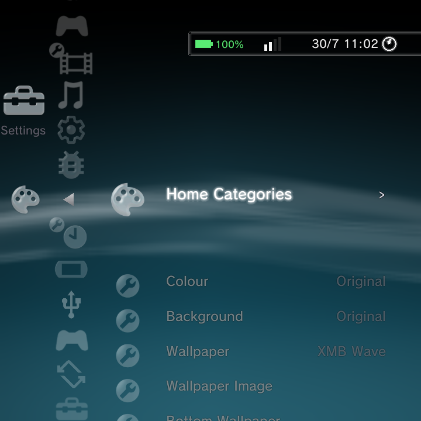
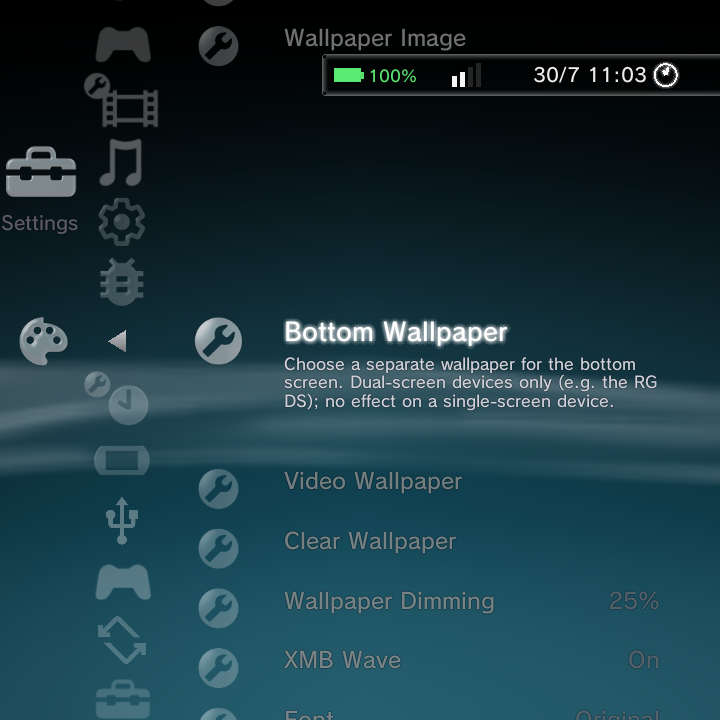
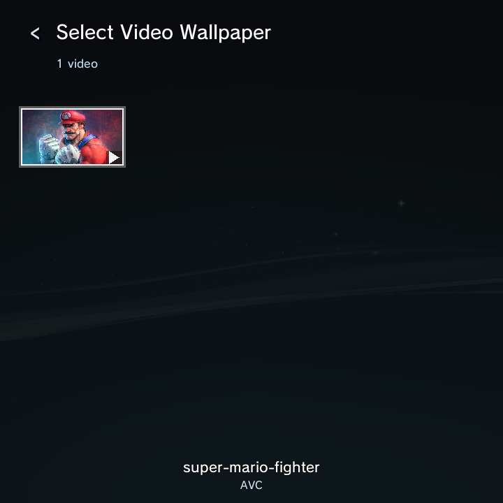
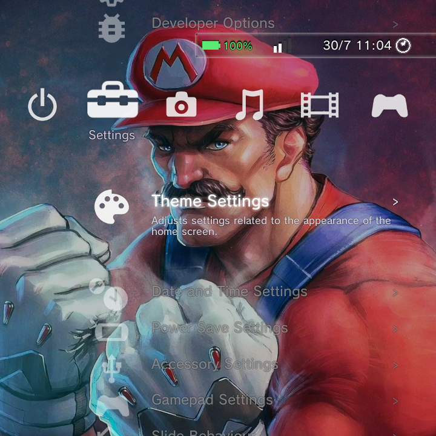

Beyond the three home themes, Theme Settings is where you make the home your own: a still photo or a looping video wallpaper, a dimming scrim so bright art does not drown the menu, accent colour, fonts, and more. It all lives under Settings > Theme Settings.

For the three home looks themselves (XMB, DSi, Minima), see Home Themes. This page focuses on wallpapers and the finer appearance controls.
The wallpaper rows

| Row | What it does |
|---|---|
| Wallpaper Image | Pick a photo as the home background, chosen from a picker grid |
| Bottom Wallpaper | A separate wallpaper for the bottom screen (dual-screen devices only) |
| Video Wallpaper | Pick a looping video as the top-screen background |
| Clear Wallpaper | Remove the custom wallpaper and bring back the moving wave |
| Wallpaper Dimming | Darken a photo or video wallpaper so icons and text stay readable |
| XMB Wave | Show or hide the PS3 wave (auto-off when a wallpaper is set) |
Setting a video wallpaper
A looping video makes a lively, console-like backdrop. Here is the whole flow.
- Go to Settings > Theme Settings > Video Wallpaper.
- Nano scans your videos and shows them in a picker. Choose the one you want.

- Select it, and it starts playing behind the home right away, looping quietly.

Put the videos you want to use in your Movies folder so the picker can find them. The XMB wave switches off automatically when a wallpaper is set, so the video shows cleanly.
The darkened scrim (Wallpaper Dimming)
A bright or busy wallpaper can make the menu text and icons hard to read. Wallpaper Dimming lays a dark scrim over the wallpaper to fix that. Higher values make it darker. The default is a gentle 25 percent, and you can push it much higher for a moody, high-contrast look where the menu really pops.
Wallpaper Dimming only affects a custom photo or video wallpaper. With no wallpaper set (just the wave), it does nothing.
Removing a wallpaper
Choose Clear Wallpaper to drop the custom image or video on both screens and bring back the moving wave. If you would rather keep a wallpaper but see the wave too, turn XMB Wave back on.
Other appearance controls
Theme Settings also holds:
- Colour: the accent colour, with 21 choices (see Home Themes).
- Background and Font: overall background style and font look.
- Day/Night: the XMB lighting blend.
- Background Colour: a solid colour for the Minima home (Minima only).
- Bottom Clock and Bottom Clock FPS: the PSP-style clock on dual-screen devices.
- Home Categories: reorder or hide the top-level categories.
- Home Theme: switch between XMB, DSi, and Minima (this restarts the home).
Where to go next
- Home Themes for the three looks in detail.
- Settings Reference for the whole Settings tree.